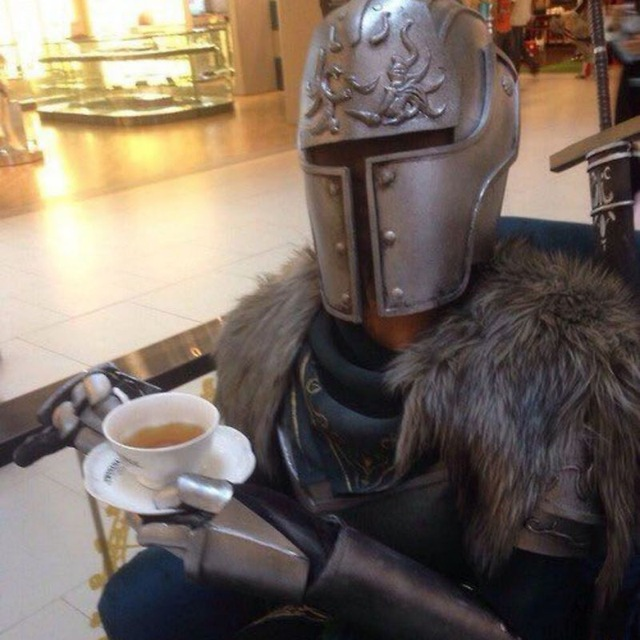

| рядок1 | |||
| стовбець1 | |||
| р2 ст2 | стовбець 2 | р2 ст4 | |
| р3 ст2 | р3 ст4 | ||
| р4 ст2 | р4 ст4 | ||
| р5 ст2 | р5 ст4 | ||
|  | |||
- квадрат1
- квaдрат2
- коло1
- коло2
- диск1
- диск2
- квадрат3
- квадрат4
- квадрат5
- Латиниця1
- Латиниця2
- Латиниця3
- Число1
- Число2
- Число3
- лaтиниця1
- лaтиниця2
- лaтиниця3
- АКОРД
- Гармонійне поєднання кількох музичних звуків або голосів.
- БОРМАШИНА
- Зуболікарський апарат для свердління зубів.
- ВЕЛОСИПЕД)
- Напівавтоматична дво- і триколісна машина, що рухається силою їздця, який натискує ногами на педалі.
- ГОЛУБ
- Птах ряду голубоподібних з різнобарвним пір'ям та великим волом.
- ДИКТАТОР
- Особа, що має в державі необмежену владу.
Link на файл
Мій e-mail